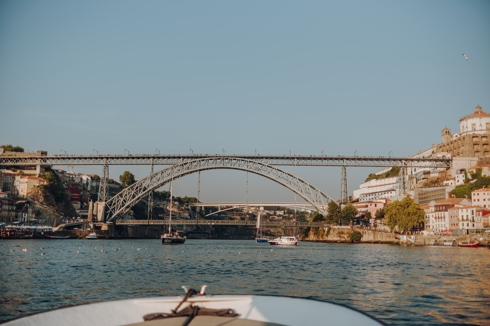

Boating Porto
Experiências Autênticas no Rio Douro
A Boating Porto dedica-se a proporcionar momentos de exclusividade e conforto. Navegamos pelas águas do Douro com o objetivo de mostrar a cidade do Porto sob uma perspetiva única e memorável.
Seja num charter privado ou num tour partilhado, garantimos um serviço de excelência focado na hospitalidade e no detalhe.
As Nossas Experiências
Privados
Charters exclusivos para grupos que procuram privacidade e roteiros personalizados.
Partilhados
A forma ideal de conhecer o rio e novas pessoas numa atmosfera descontraída.
Sunset
O momento mais especial do dia, acompanhado pela luz única do entardecer no Porto.


Reservas Online
Selecione abaixo a experiência pretendida.